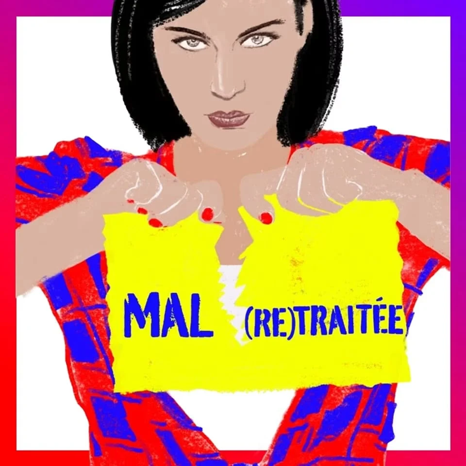

Publication relayée par le PCF 79
8 mars. Le PCF dénonce les inégalités et les violences faites aux femmes
Date de mise à jour indiquée par Facebook · 8 mars 2023
Texte de la publication · PCF national
Partout dans le monde, les femmes sont encore victimes d'inégalités et continuent de subir des violences sexistes et sexuelles. Féminicides, viols, inégalités salariales, traite, esclavage, etc.
Partout dans le monde, retrouvons-nous dans les rues aujourd'hui pour la journée internationale de lutte pour les droits des femmes. Unissons-nous !
En France, profitez-en pour dire NON à la réforme des retraites dont les femmes seront les premières victimes.

Sources
PCF national · publication relayée par le PCF 79 · bibliothèque Facebook · AR-0002-FB-01735
À lire aussi · À Niort, appel à se rassembler en mémoire de Lyhanna et en soutien aux victimes